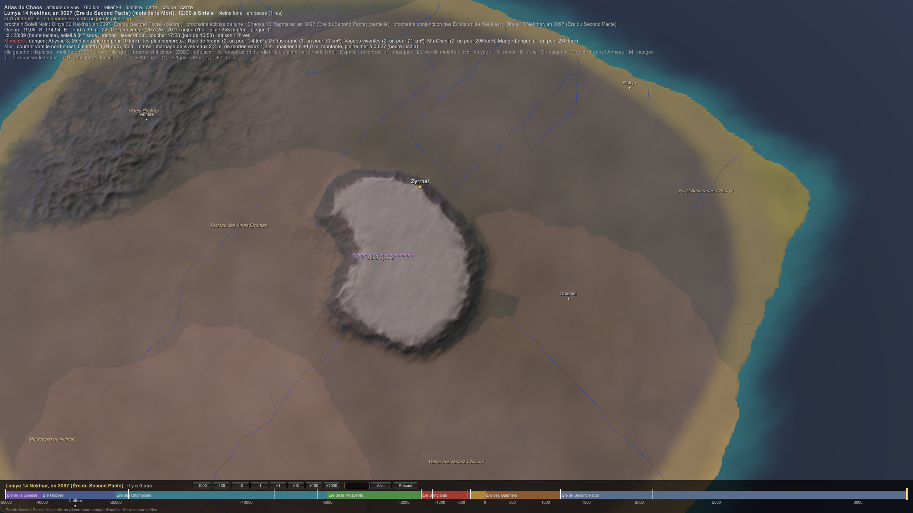

CIV-035 — Tawurt, les Monolithes du Silence
Ce qui est posé :
- le pays : Tawurt, « la Porte » (anciennement ThulZ), aux antipodes de Sera. C'est le continent de la porte terrestre du Chaos, scellée au premier Pacte en −300. Sa capitale est Zyrrhal, la Cité-Monolithe, avec un monolithe central de 300 m. Les sanctuaires sont Azoryn, Draethal, Nulthar et Velmire (Géographie - Tawurt) ;
- le dieu : Sau-Shetau, le Gardien (Justice, Équilibre, Secrets ; anciennement Othriel). C'est le seul royaume où la loi est celle du dieu de la Justice (CIV-012) ;
- le peuple : ≈ 300 000 Nkaras. Le Gardien les a créés avec le Premier Fils, à son image, pour garder la porte. Les douze premiers sont nés vers −300 ;
- le corps (BIO-006) :
- ≈ 2,3 m pour ≈ 25 kg, et ≈ 300 ans de vie ;
- une couronne d'yeux, et pas de visage ;
- ils flottent près de la Porte, tombent loin d'elle ou sous le fer, et ne portent presque rien ;
- ils vivent du Chaos, de la brume et des sels ;
- ils parlent le Syrrh, du Tzéhar chuchoté (CIV-004) ;
- la reproduction : un seul parent, une graine qui coûte une part du corps. Les places dans les Berceaux sont attribuées par le conseil. La transparence est un honneur. À la fin vient le dernier don : le Nkara se fond dans un Berceau ;
- la garde : ils veillent la Porte les Jours Sans Pacte. Leurs portes sacrées sont cerclées de fer, et ils les ouvrent avec un outil de bois (CIV-023).
1. L'origine : « nés de l'obéissance »
Ta fiche et le canon disent la même chose avec des mots différents, et il y a moyen en effet.
- Ta fiche : les premiers ont été « façonnés par l'énergie du Chaos stabilisée par le Gardien ».
- Le canon : une bonne part de leur corps est du Chaos lié, fixé et orienté (BIO-006). « Du Chaos stabilisé par le Gardien », c'est littéralement leur chair.
- Ce qui change : le Premier Fils, qui a aidé à les créer, n'apparaît pas dans leur récit. Les Nkaras ne gardent que le Gardien : on obéit à celui qu'on voit à l'œuvre.
- « Des veilleurs immortels » : un Nkara vit ≈ 300 ans. Ce qui est immortel, c'est la lignée. Par le dernier don, chaque mort nourrit les graines, et la garde ne s'interrompt jamais.
2. Le gouvernement (fiche de l'auteur)
| Rang | Ce qu'il est |
|---|---|
| Le Gardien | Sau-Shetau, invisible : nul mortel ne le voit |
| L'Apôtre du Gardien | la seule voix du dieu ; toute loi, toute guerre et toute paix sortent de sa bouche |
| Le Chœur des Veilleurs | treize grands moines-spectres, choisis par l'Apôtre, qui interprètent et appliquent ses décrets |
| Le Synode des Temples | les abbés des sanctuaires, une fois par an, pour transmettre les ordres et coordonner les missions |
| Le Cercle des Fonctions | les cinq ordres (§ 3) |
« La parole descend du Gardien comme la pluie tombe du ciel » : pas d'élection, pas de débat.
L'Apôtre, avec le canon (DIV-007) :
- un dieu n'a qu'un apôtre par génération, et il ne parle pas en mots. L'apôtre reçoit des visions et des certitudes, et il les traduit. Tout Tawurt repose donc sur une seule traduction ;
- l'apôtre de Sau-Shetau est toujours un Nkara. Comme un Nkara vit trois siècles, un même apôtre peut parler pour le Gardien pendant deux cents ans. C'est la parole la plus stable du monde, et la plus difficile à corriger ;
- L'Apôtre Originel (ta fiche : « le premier mortel choisi », « le seul à avoir parlé directement pour le Gardien »). Proposition : les douze premiers ont été créés. L'Apôtre Originel est le premier Nkara né d'une graine, donc le premier vraiment mortel. Le « treizième ».
Les treize Veilleurs : un par lignée (douze), plus le Doyen, le plus transparent de Tawurt, celui qui a le plus donné. Le treizième siège rappelle l'Apôtre Originel.
La natalité, avec le canon : un enfant naît parce qu'un ordre a demandé une place dans les Berceaux, et que le Chœur la lui a donnée. C'est pour cela que « tout Nkara naît avec un rôle » : il est attendu par son ordre avant même de germer.
3. Les cinq ordres, le Cercle des Fonctions (fiche de l'auteur)
| Ordre | Ce qu'il fait | Avec le canon |
|---|---|---|
| les Sentinelles | les routes et les sanctuaires ; les moines-guerriers | formés à Azoryn |
| les Archivistes | le savoir, les rouleaux de métal, les fresques | à Draethal. Leurs rouleaux sont d'argent ou d'étain, jamais de fer |
| les Herboristes | la médecine du corps et de l'esprit | ils tiennent les plantes de Tawurt (Lotus ectoplasmique, Racines-Sangsues) |
| les Géomants | les runes de protection et les cercles du Chaos ; les monolithes (§ 4) | à Draethal |
| les Navigateurs | les bateaux et les sentiers sacrés | l'ordre le plus dur : loin de la Porte, un Nkara tombe. Ils voyagent portés, et ce sont eux qui font le seul échange de Tawurt avec le monde (§ 7) |
4. Les monolithes : ce qui rend Tawurt habitable
Ta fiche dit que « chaque monolithe sert à stabiliser ou dissoudre des flux instables ». Je propose qu'ils fassent aussi autre chose.
- Un Nkara ne flotte que sur un sol saturé de Chaos (BIO-006). Or la fuite de la Porte ne sature qu'une zone limitée.
- Les monolithes sont de grandes pierres gravées de glyphes (la pierre, jamais le fer). Ils répandent la fuite de la Porte sur le plateau et la dirigent vers les Berceaux.
- Sans les monolithes, Tawurt serait trop petit pour les Nkaras. Ce sont eux qui tracent leur royaume : « villes-sacrées verticales » et villages autour de chaque monolithe (Géographie - Tawurt).
- « Chaque monolithe est un œil » : un glyphe ressent le flux qui le traverse. Un monolithe sent toute variation du Chaos autour de lui, et donc tout ce qui entre.
- « Ne jamais toucher un monolithe sans permission » : toucher la pierre, c'est dévier le flux d'un village entier.
- Les runes argentées : l'argent est un métal neutre, qui laisse passer un peu de Chaos sans le boire (CHI-004). Incrusté dans la pierre, c'est un circuit, comme la damasquinure. C'est le métal des Nkaras, à l'opposé du fer.
5. La justice : l'effacement de l'âme
Le Tribunal des Ombres juge vite, et ses verdicts sont lapidaires.
- La méditation forcée : des jours ou des mois d'isolement et de silence devant un monolithe.
- L'effacement rituel de l'âme, pour les hérétiques. Proposition : c'est le parjure.
- Au Passage, chaque Nkara jure obéissance au Gardien sur son vrai nom (CIV-016).
- Contester le Gardien, c'est rompre ce serment, et le parjure vide l'âme (≈ 80 g de TNT pour une âme ordinaire).
- Le Tribunal ne tue donc personne : il fait renouveler le serment, et l'hérétique qui ment s'efface tout seul. « Le contester, c'est disparaître » n'est pas une menace, c'est une loi de la nature.
- La vraie peine est ailleurs : l'hérétique n'a pas de dernier don. Son corps ne rejoint pas les Berceaux, et sa lignée le perd.
6. La vie (fiche de l'auteur, accordée au corps)
- Les habits : des robes noires ou translucides, toujours assez ouvertes en bas pour laisser le voile libre, sinon ils ne flottent plus.
- La capuche couvre la couronne d'yeux. Proposition : on ne se découvre que pour juger. « Un œil couvert ne juge pas. »
- Les tatouages runiques sont des glyphes de Chaos lié sous la peau translucide. Seuls ceux qui sentent les flux les voient : les initiés.
- La nourriture : ta fiche parle de céréales, d'herbes et de viande de monstres apprivoisés. Or les Nkaras n'ont pas de bouche : ils boivent par une poche.
- tout se boit. Ce sont des infusions d'herbes, des bouillons de céréales et de rares bouillons de viande, en plus du Chaos, de la brume et des sels.
- Les monstres apprivoisés sont surtout des porteurs. Un Nkara ne porte presque rien : ce sont eux qui portent les charges et les litières.
- La langue : le Syrrh chuchoté, et le Tzéhar gravé pour les rites. Ta « pensée projetée » : proposition, ce n'est pas de la télépathie. C'est la langue des voiles : on parle en faisant vibrer ses filaments dans le champ, et seul un autre Nkara la sent.
- Les fêtes : la Journée du Veilleur, pour les douze fondateurs ; la Nuit des Monolithes, une méditation collective ; et les Jours Sans Pacte, leur plus lourde garde.
- Les maximes : « Chaque monolithe est un œil », « La voix du silence juge plus que la parole », « Celui qui conteste la pierre ne conteste pas l'homme, mais le Gardien ».
- Le tabou : l'individualisme. Chez un peuple sans couple et sans famille, à un seul parent, c'est presque naturel.
7. La défense et le monde
- Pas d'armée : la discipline et la puissance de chaque moine-guerrier.
- Leurs armes sont légères, puisqu'ils ne portent presque rien : bâtons runiques, dagues sacrées, sceaux de paralysie et de scellement.
- Les Reliques du Silence dissolvent, paralysent ou scellent.
- Les barrières runiques sont des pièges invisibles autour des sites.
- Leurs forces sur leur sol : ils voient tout autour d'eux, glissent sans bruit, et les monolithes sentent qui entre.
- Leur faiblesse : le fer. Un envahisseur en armure de fer est le seul qui leur fasse peur.
- La doctrine : « quiconque ose entrer est effacé du monde ».
- Les Hejeti, leur vrai ennemi : les Hejeti veulent libérer la Mère, et Tawurt garde la porte terrestre.
- Leurs déguisements ne trompent pas les Nkaras, qui ne regardent pas les visages mais les flux : un pli d'espace se sent.
- C'est une quatrième chose qui trahit un Hejeti, avec les Balances, les lecteurs de Naora et les Masques vivants (CIV-032 Les Hejeti, la culture et le regard des autres). La plupart des intrus « effacés » sont des Hejeti.
- Le commerce : presque l'autarcie. Le seul échange est le sel, contre les ressources du Chaos (CIV-023), et il passe par les Navigateurs. Précisé : Tawurt vend le sel de ses salines, tiré de la mer la plus salée du monde, et achète à Maakar les fragments du dieu des Dimensions tombés de l'Anneau, pour qu'ils ne tombent jamais aux mains des Hejeti. La garde de la Porte se prolonge jusqu'au marché.
- Le regard des autres : la crainte et le respect. Khodom les respecte en s'en méfiant (CIV-033 Khodom). Les moines sont des légendes vivantes.
Sur l'Atlas : les sanctuaires
Les noms sont ceux de ta fiche (Géographie - Tawurt) ; je n'ai choisi que les places, selon ses directions (disposition déléguée).

Ce que montre l'Atlas. Tawurt est un dôme : le mont Zyrrhal monte à 5 400 m au-dessus de la Porte (PLA-004), au milieu d'un plateau de 300 à 900 m, le Plateau des Âmes Errantes. Tout le pays est saturé de Chaos (au-dessus de 0,55, le seuil des territoires), et plus on s'approche du mont, plus il l'est. Le climat est tropical, de 12 à 20°S : savane humide au nord (1 200 à 1 600 mm), steppe au centre, désert chaud au sud-ouest.
| Lieu | Rôle (ta fiche) | Où, sur l'Atlas |
|---|---|---|
| Zyrrhal (capitale) | la Cité-Monolithe, le monolithe de 300 m | sur le flanc nord du mont, à 3 500 m. Le Sanctuaire du Gardien est au sommet |
| Azoryn | les Sentinelles | au nord-est, au bord de la Forêt Suspendue |
| Draethal | les Archivistes et les Géomants | au centre-est, sur le plateau |
| Velmire | le sanctuaire fortifié des montagnes | dans les Monts Éthérés, au nord-ouest, à 2 000 m |
| Nulthar | le bastion frontalier des marais | au sud-ouest |
| Thryz | le port | sur la côte ouest |
Deux ajouts au relief pour suivre ta fiche :
- les Monts Éthérés n'existaient pas sur l'Atlas. Je les ai ajoutés au nord-ouest, jusqu'à 3 800 m : ils sont frais et humides ;
- les Marécages de Nulthar sont au sud-ouest, là où l'Atlas met le désert. Ta fiche donne la solution : la Rivière de l'Oubli descend du plateau et se perd dans les marais. C'est un delta intérieur au bord du désert, comme l'Okavango dans le Kalahari.
L'Okavango descend des hauts plateaux de l'Angola et ne rejoint jamais la mer : il s'étale en un marais de 15 000 km² au milieu du désert du Kalahari, au Botswana, où presque toute son eau s'évapore (McCarthy, Journal of Hydrology, 2006).
Le mont garde son nom de relief : sur la carte, il s'appelle maintenant « Mont Zyrrhal », pour ne pas doubler le nom de la ville.
Liens
BIO-006 Les Nkaras · CIV-023 Les peuples hors de Sera · Royaume - Tawurt (fiches de l'auteur) · Géographie - Tawurt · Climat - Tawurt · DIV-003 Dieux protecteurs des royaumes · DIV-007 Héros, champions, héritiers et apôtres · CIV-012 Le pouvoir et la loi · CIV-016 La société · CIV-032 Les Hejeti, la culture et le regard des autres · CIV-024 Les sept royaumes en 3097